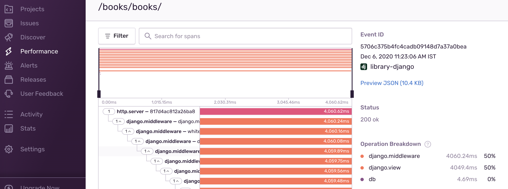

Find Performance Issues In Web Apps with Sentry
Introduction
Earlier, we have seen couple of articles here on finding performance issues1 and how to go about optimizing them2. In this article, lets see how to use Sentry Performance to find bottlenecks in Python web applications.
The Pitfalls
A common pitfall while identifying performance issues is to do profiling in development environment. Performance in development environment will be quite different from production environment due to difference in system requirements, database size, network latency etc.
In some cases, performance issues could be happening only for certain users and in specific scenarios.
Replicating production performance on development machine will be costly. To avoid these, we can use APM tool to monitor performance in production.
Sentry Performance
Sentry is widely used Open source error tracking tool. Recently, it has introduced Performance to track performance also. Sentry doesn't need any agent running on the host machine to track performance. Enabling performance monitoring is just a single line change in Sentry3 setup.
import sentry_sdk sentry_sdk.init( dsn="dummy_dsn", # Trace half the requests traces_sample_rate=0.5, )
Tracing performance will have additional overhead4 on the web application response time. Depending on the traffic, server capacity, acceptable overhead, we can decide what percentage of the requests we need to trace.
Once performance is enabled, we can head over to Sentry web application and see traces for the transactions along with operation breakdown as shown below.

At a glance, we can see percentage of time spent across each component which will pinpoint where the performance problem lies.
If the app server is taking most of the time, we can explore the spans in detail to pinpoint the exact line where it is taking most time. If database is taking most of the time, we can look out for the number of queries it is running and slowest queries to pinpoint the problem.
Sentry also provides option to set alerts when there are performance. For example, when the response time for a duration are less than a limit for a specified duration, Sentry can alert developers via email, slack or any other integration channels.
Conclusion
There are paid APM tools like New Relic, AppDynamics which requires an agent to be installed on the server. As mentioned in earlier articles, there are open source packages like django-silk to monitor performance. It will take time to set up these tools and pinpoint the issue.
Sentry is the only agentless APM tool5 available for Python applications. Setting up Sentry performance is quite easy and performance issues can be pinpointed without much hassle.
-
Earlier there was Opbeat APM which is now shutdown due to acquistion by Elastic. ↩

Written by
Chillar Anand
Musings about programming, careers & life.